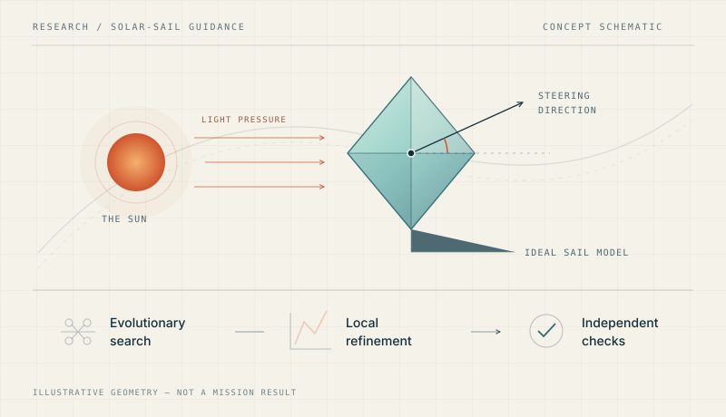
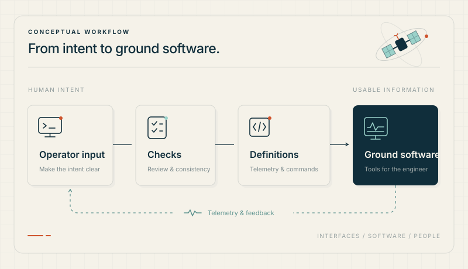
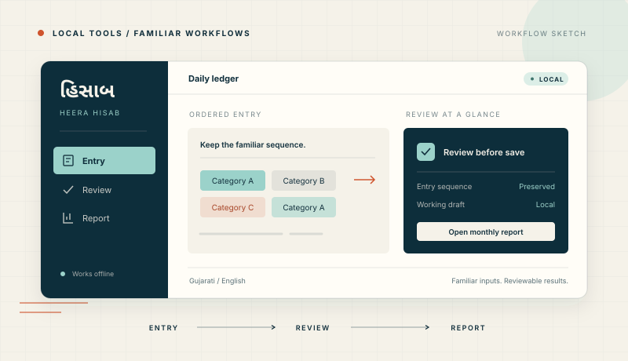
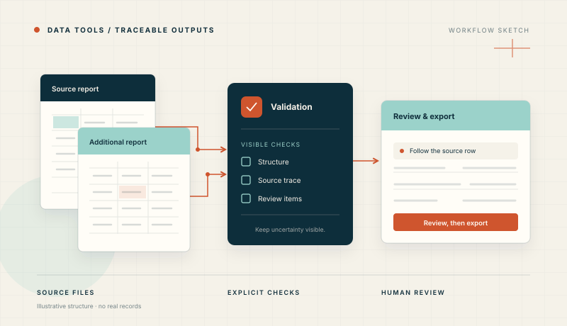

01Steering with sunlight.
Connecting evolutionary neurocontrol and local optimisation for ideal solar-sail interplanetary rendezvous.
Aerospace engineering · FH Aachen
I’m Meet, a master’s student in aerospace engineering. I connect trajectory research, spacecraft ground systems, and software built around the people who use it.
Try the physics
Light pushes a reflective sail. Its angle changes the push.
Use the slider or drag the ring. The angle is measured from the sunlight direction to the sail normal.
Relative to the face-on acceleration, a₀ = 1.
Tilting adds a sideways component while reducing the total push.
A flat, perfectly reflecting sail in fixed sunlight. The orange vector is instantaneous sail acceleration, not velocity or a flight path. Gravity and non-ideal optical effects are outside this sketch.
|a| / a₀ = cos²(α)aᵣ / a₀ = cos³(α)aₜ / a₀ = cos²(α) sin(α)The normal is perpendicular to the sail surface. Positive and negative tilt reverse the sideways component; the outward component remains non-negative. The components form a vector sum.
Public ideal-sail physics; original geometry and normalized values. No thesis trajectories, controller parameters, or unpublished results are used.
Model reference: Wawrzyniak & Howell (2011), Eq. 4Selected work / 01—04
Understand the inputs. Make the behaviour explicit. Build something that can be checked—and used.

01Connecting evolutionary neurocontrol and local optimisation for ideal solar-sail interplanetary rendezvous.

02A graphical command-verification workflow and mission-database integration for CubeSat propulsion.

03Diamond Ledger / Heera Hisab: a Gujarati-first, offline ledger shaped around an existing handwritten way of working.

04GST Local Pro: an offline spreadsheet review and export tool developed around an accounting workflow.
Project visuals are original conceptual illustrations. Professional and private work is presented at a high level.
Engineering notebook / Further work
Communication links, habitat loops, atmospheric entry, and human input. These studies and personal tools explore what happens at the interfaces.
A coauthored communications and data-handling study for a conceptual Io lander, connecting antenna coverage, relay visibility, link budgets, and data buffering.
A team engineering review of closed-loop life support for lunar and Martian habitats, weighing resource recovery alongside power, maintenance, and crew workload.
Individual Python notebooks exploring how ballistic coefficient, entry angle, and atmospheric density shape capsule deceleration—and where simplified models reach their limits.
A personal Swift/AppKit adaptation for Magic Mouse gestures, with intent checks, separate sensitivity controls, and cancellation when the input context changes.
Personal fork of MiddleClick · GPL-3.0
Academic entries identify team work and coursework. Illustrations are original concepts; project datasets, internal specifications, and private source files are not published here.
Professional experience
GOSGround segment engineering
My work at GOS connects spacecraft interfaces to usable ground software. I contribute to telemetry and telecommand definitions, mission-database integration, operational scripts, and engineering documentation in a Yamcs-based environment.
My contributions also include subsystem integration, regression and build checks, and documented software handovers that make changes easier to inspect and reproduce.
Yamcs · XTCE / XML · Python · Java
How I work
A trajectory model and a ledger look different. Both become better systems when assumptions, state, and checks are clear.
Follow the inputs, constraints, and people involved. A useful model begins with a clear problem.
Translate the model into software with explicit interfaces, inspectable state, and a usable path through the work.
Use validation, replay, source traceability, and clear limitations to understand what a result actually demonstrates.
A little about me
I’m pursuing an M.Sc. in Aerospace Engineering at FH Aachen, specialising in Space Exploration Engineering, after completing my bachelor’s degree in Aerospace Engineering there.
I’m drawn to the space between the equation and the working tool: a sail-steering problem, a spacecraft command interface, or a workflow that deserves better software. I enjoy finding the structure in a complicated problem and making it clearer for the next person.
Start a conversation
I’m interested in aerospace engineering, ground systems, numerical methods, and thoughtful software. Find me on GitHub.
Meet me on GitHub